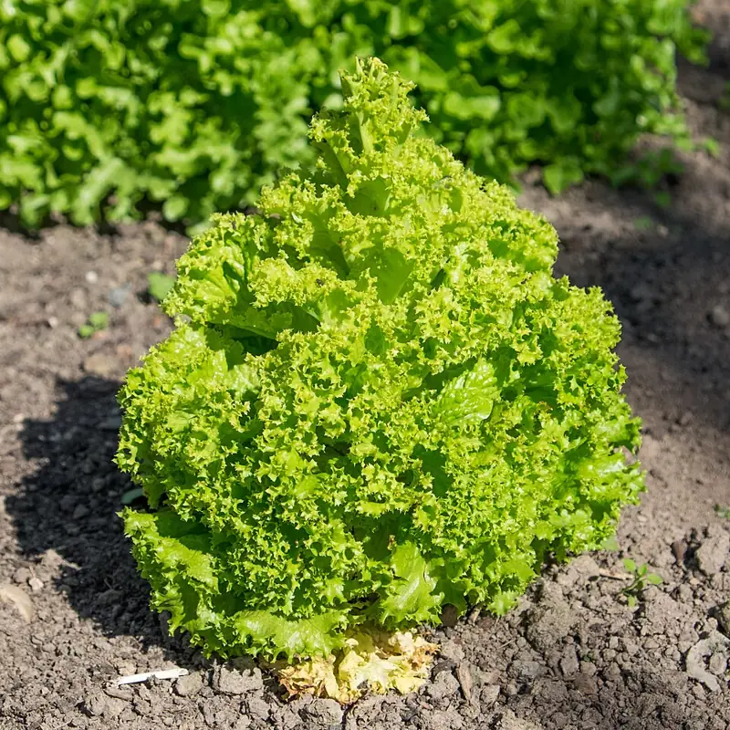

La extensión adulta de una planta debe caber en el área que tiene asignada.
Bien establecidoCómo funciona: Geometría.
Evidencia: resuelta sin un ensayo (aritmética).
Solución
Reduce el número de plantas, o elige un grupo de variedades de mata.
Una guía para tu primera temporada. Elige unos cuantos cultivos que perdonan errores, cuenta desde tus fechas de helada, adelanta lo que necesita ventaja, aclimátalo y ponlo en la tierra en el momento justo.

Qué necesitas
Tu primera cama es más fácil de lo que parece en internet. El truco es plantar unos cuantos cultivos que perdonan errores y dejar que tus fechas de helada te digan cuándo. Aquí está toda la secuencia en una cama pequeña, con tres cultivos que entre los tres enseñan las tres maneras en que empieza una planta: un cultivo de hoja rápido que esparces ahora, un cultivo de semilla grande que metes directamente en la tierra y un cultivo de temporada cálida al que le das ventaja en interiores.
Escoge una cama a pleno sol (de seis a ocho horas) a la que llegues sin pisarla. Luego elige tres cultivos fáciles: rábano o lechuga (un cultivo rápido de temporada fresca que siembras directo), frijol tipo arbusto (una semilla grande que va directo a la tierra) y un tomate (un cultivo de temporada cálida que vale la pena empezar temprano en interiores). No los amontones. Cada planta necesita su extensión adulta, y el planificador te lo va a exigir:
Cómo funciona: Geometría.
Evidencia: resuelta sin un ensayo (aritmética).
Reduce el número de plantas, o elige un grupo de variedades de mata.
Todo a partir de aquí se calcula desde tu última helada de primavera. Sácala del planificador (viene con tu dirección) y recuerda que es un promedio. Algunos años la helada llega más tarde. La guía de las fechas de helada explica cómo leer las probabilidades. Vas a contar hacia atrás desde ella para el tomate y hacia adelante para el frijol.
Un tomate necesita ventaja para madurar en una temporada normal, así que va en una ventana o bajo una lámpara varias semanas antes de poder salir. El planificador programa la ventaja exacta:
Cómo funciona: Un cultivo sensible a la helada con muchos días a la cosecha no puede madurar si solo se siembra directamente después de la última helada, porque la ventana sin heladas es demasiado corta. Una ventaja inicial bajo cubierta compra las semanas que le faltan a la temporada; la plántula solo se trasplanta una vez que ha pasado la helada, así que la fecha de trasplante sigue dependiendo de la helada.
Evidencia: cotejada con 3 fuentes en la literatura basada en investigación.
Resumimos esta fuente en nuestras notas en lugar de citar una línea.
Early-to-mid-March Vegetables & herbs: artichoke, broccoli, cabbage, cauliflower, eggplant, kale, lettuce, oregano
Siémbralo en una maceta pequeña, mantenlo caliente y con buena luz, y déjalo crecer mientras afuera todavía hace demasiado frío.
El rábano y la lechuga son resistentes. Quieren el fresco. Siémbralos directo en la cama unas tres semanas antes de tu última helada, el rábano a 1.3 cm0.5 pulg. de profundidad y la lechuga a 0.6 cm0.2 pulg., y aclara las plántulas a su distancia cuando midan una o dos pulgadas (córtalas; arrancarlas molesta a las vecinas). Este es el margen de los cultivos resistentes en acción:
Cómo funciona: Resistencia al frío. Los cultivos resistentes toleran heladas fuertes y los semirresistentes toleran heladas ligeras, así que pueden ocupar la tierra semanas antes de que se permita la entrada a los cultivos sensibles a la helada. El desfase se mide desde la última helada de primavera.
Evidencia: cotejada con 2 fuentes en la literatura basada en investigación.
… withstand freezing temperatures and hard frosts without injury
As early as 2-4 weeks before the date of the average last spring frost
Además, 2 notas de trabajo sobre cómo se leyeron las fuentes.
Cuando ya pasó el peligro de helada y el suelo se calentó, mete las semillas de frijol una pulgada en la tierra donde van a crecer. Los cultivos de semilla grande llevan mal el trasplante y se ponen al día sin problema desde una siembra directa. El tomate sale unas dos semanas después, cuando los días ya se mantienen cálidos, porque es muy sensible y los días frescos lo frenan. Plántalo más hondo de lo que estaba en su maceta, enterrado hasta sus primeras hojas, porque un tomate echa raíces a lo largo de todo el tallo enterrado. Riega todo al plantar.
El rábano y la lechuga son rápidos y terminan todos a la vez, así que vuelve a sembrar una hilera corta de rábano cada 7–10 días y una de lechuga cada 10–14 días. Eso es la siembra escalonada, y convierte un exceso en una cosecha constante:
Cómo funciona: Sembrar el mismo cultivo en tandas separadas por unas dos semanas escalona el momento en que madura cada tanda, así que la cosecha llega en una sucesión continua, sin llegar toda de golpe. Solo vale la pena para cultivos con pocos días a la cosecha, cuyo ciclo rápido permite que varias siembras maduren dentro de una sola temporada.
Evidencia: cotejada con 1 fuente en la literatura basada en investigación.
Plant one crop, then approximately 2 weeks (or more) later, plant the same crop in another area to have a continual harvest.
Sol, el momento justo según tus fechas de helada, un espaciado con el que las plantas puedan vivir y la costumbre de volver a sembrar el cultivo rápido. Registra qué plantaste y dónde. El año que viene, ese registro es lo que permite que la rotación de cultivos mueva cada familia a terreno nuevo.
Buenos lugares para leer más sobre la técnica de esta página. La calificación de cada tarjeta viene de las fuentes de esa misma tarjeta.
Las reglas en las que se apoya esta guía:
Plantas en esta guía: Lechuga